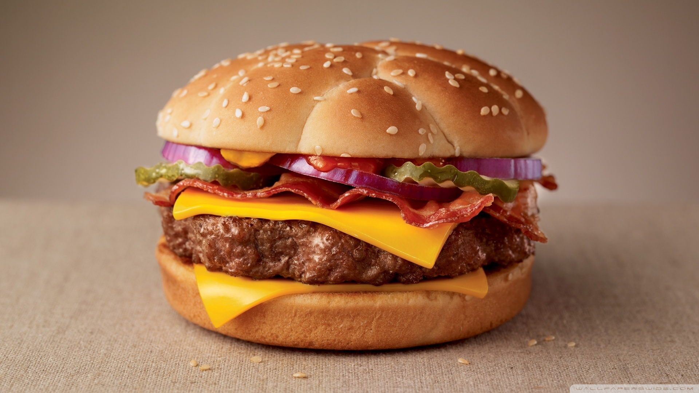
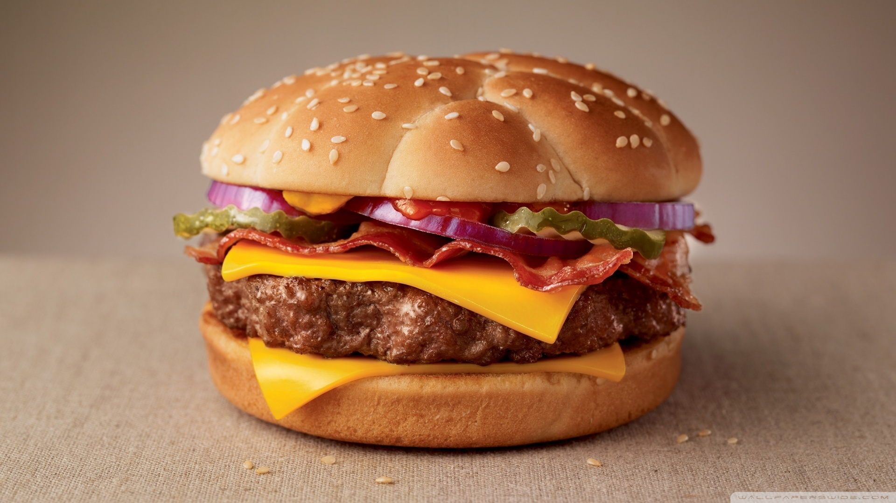

1 van de leuke serveertips erbij is franse friet.
Vul een medium bak met alleen maar water.
1. Snij de schil van de aardappel af.
2. Snij de aardappel door de helft.
3. Leg de aardappel met de platte kant naar beneden en snij het in reepjes.
4. snij de reepjes dun.
5. zet de frituur aan op 160 graden.
6. leg alle frietjes erin.
7. laat het ongeveer liggen totdat het vet kookt en draai het dan op 240 graden.
8. laat het de juiste kleur krijgen.
9. doe ze in een bak of op een bord en laat het een beetje afkoelen.
10. Doe een lekker sausje erbij en smakelijk eten.